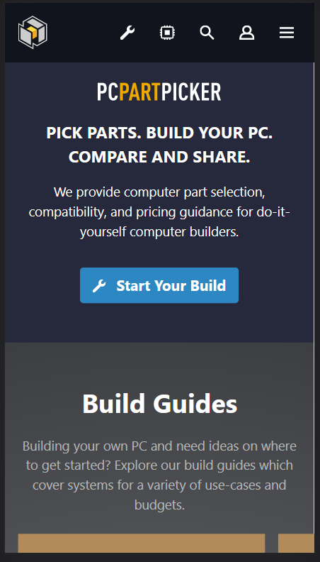
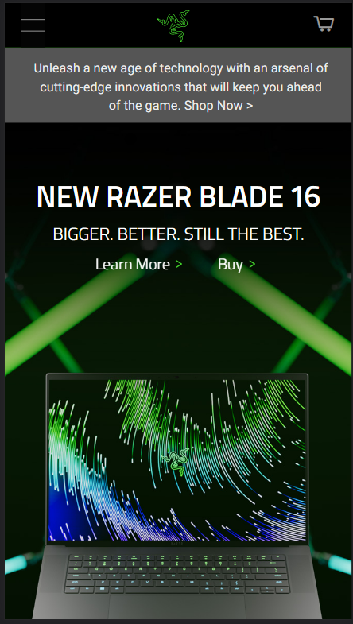

White Space and Clean Design
PCPartPicker
PCPartPicker did a good job on their website mobile view on utilizing the white space by adding some paddings on the buttons, spaces between elements and icons. The spacing was able to make the website readable and it gives the reader the indication that a new idea is being presented by adding white space between paragraphs. The padding in the button was able to guide the reader's eye to where the call to action needs to be clicked to get started on their services. The spacing also improved focus and it was easier to read as there are only fewer elements in the website. Instead of making the website crowded with information, they have utilized white space and clean design to make their website more user-friendly.
Contrast
Razer
Razer's website has always been dark and green in color and they should make the font color stand out to be readable which they did. The white font color and black background is always preferred for the text to be readable create importance. The bright green against black has a higher contrast and it presents their brand successfully and one example is their logo at the very top.
Alignment
Church of Jesus Christ of Latter-day Saints

The alignment in The Church of Jesus Christ of Latter-day Saints' website creates an organized design on all the elements. Although there are no paragraphs here to align them with the images, it is also designed for people who scan like the letter "F" since the title is aligned left and the elements below that are organized and visually appealing.